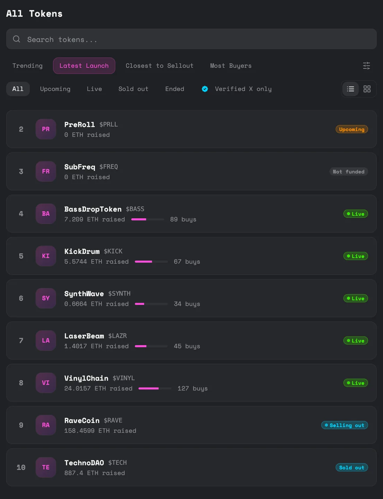
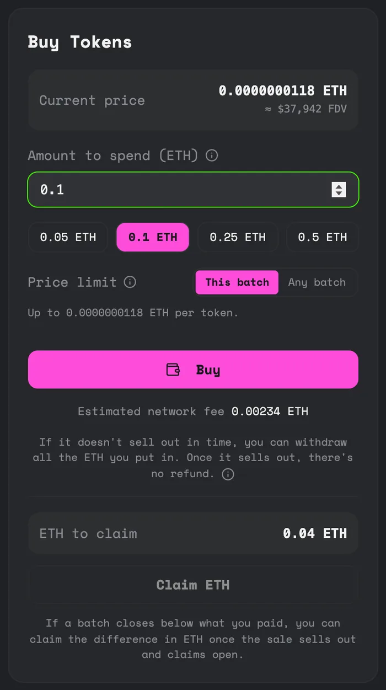

Buy in an auction
Buying in a punk.fun sale works differently from a normal fixed-price sale. The price moves as batches sell, and you collect your tokens after the sale sells out rather than straight away. Here's what you need to know.
Finding a sale
The Explore page shows the sales on punk.fun as a list or a grid of tiles, each with a badge showing where it's at. You can filter by Upcoming, Live, Sold out or Ended, or switch on Verified X only to see only creators who've proved their X account. Live means you can buy now. The other badges are explained on Sale states.

How the price works
The sale is split into batches, shown as B1, B2 and so on. A batch opens at a set price. Unless the creator has switched decay off, the price drifts down block by block towards a floor. When a batch sells out, the next one opens, bigger and usually at a higher price.
So the price drifts down, then steps up at each new batch. Pricing covers this in detail.
Commit now, claim later
- You commit ETHYou send ETH and lock in your share of tokens at the current price.
- You don't get tokens yetThey're recorded as owed to you, but they stay in the sale until it finishes.
- You claim once it sells outWhen the last token is bought, claims open and you collect everything you're owed in one go.
This applies to everyone, the creator included. The creator holds no tokens while the sale runs.
Check the sale before you buy
Every sale page has a Token Details card. It shows the platform fee, which is fixed, and the creator fee, written as a share of supply with a rating of Healthy, High or Very high. Fees and who gets what explains the ratings. Under the token's name, the by link goes to the page of the wallet that created the token, which lists everything that wallet has launched. The Creator row in Token Details shows the same wallet, and that's where the creator fee goes. The sale lists on punk.fun only show sales that the token's creator started. A sale started from a different wallet can still be reached through a link. Buys into it appear in the activity feed, and once you buy into it, it shows up on your Profile. Its page doesn't show which wallet started it or set its fee.
Placing a buy

You enter an amount of ETH. The sale works out how many tokens that buys at the current price and records them against your wallet. That number of tokens is fixed from then on. Three things are worth knowing.
Your buy is capped at this batch's price
By default your buy only goes through in the batch that's open now, at up to its current price. If that batch sells out before your transaction lands, your buy is refused rather than filled at the next batch's higher price. Nothing is spent except gas.
That's Price limit set to This batch. If you'd rather it went through even if the batch sells out first, set it to Any batch. Then your buy fills in whichever batch is open when it lands, at that batch's current price, as long as the sale is still open.
You end up paying the batch's final price
Everyone in a batch pays the price the batch sold out at. If the price decayed after you bought, you keep your tokens and get the difference back in ETH once the sale sells out. Pricing has a worked example.
Buying across a batch boundary
If your buy is bigger than what's left in the current batch, you get what remains and the leftover ETH comes straight back to you in the same transaction. You're never pulled into the next batch by accident.
If your buy takes the last token, it also creates the trading pool, so the network fee is higher than an ordinary buy. The panel warns you when this applies.
Claiming your tokens
Once the sale has sold out, the panel changes to Claim. One transaction sends all your tokens to your wallet. There's no deadline and no rush. Claiming and after the sale has more.
If you're owed ETH back because your batch's price fell after you bought, the buy panel shows the amount while the sale is still running, and you collect it with Claim ETH once the sale has sold out. If your wallet can batch transactions, Claim all takes your tokens and your ETH in one go.
If the sale doesn't sell out
Every sale has a deadline. If it passes without the sale selling out, buying stops and you can withdraw exactly the ETH you paid, with no time limit. When a sale doesn't sell out has the detail.
What can go wrong
| Situation | What happens |
|---|---|
| The batch sells out before your buy lands | Your buy is refused. Only gas is spent. Try again at the new price, or set Price limit to Any batch. |
| Your buy is bigger than what's left in the batch | You get what's left and the extra ETH comes back in the same transaction. |
| The sale doesn't sell out by its deadline | Buying stops and you withdraw exactly what you paid. |
| The final buy can't create the pool | That buy is rejected and the sale stays open. Nothing is left half-finished. |
Before you buy
- You're committing ETH now and claiming tokens later.
- Later batches usually cost more than earlier ones.
- Trading opens at roughly the average price paid across the whole sale, so a late batch can start below what it paid. See The pool at sellout.
- A sale either sells out and trades, or misses its deadline and refunds. Once it sells out, there are no refunds.